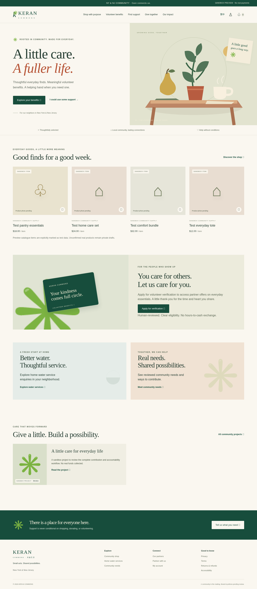
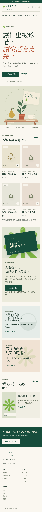
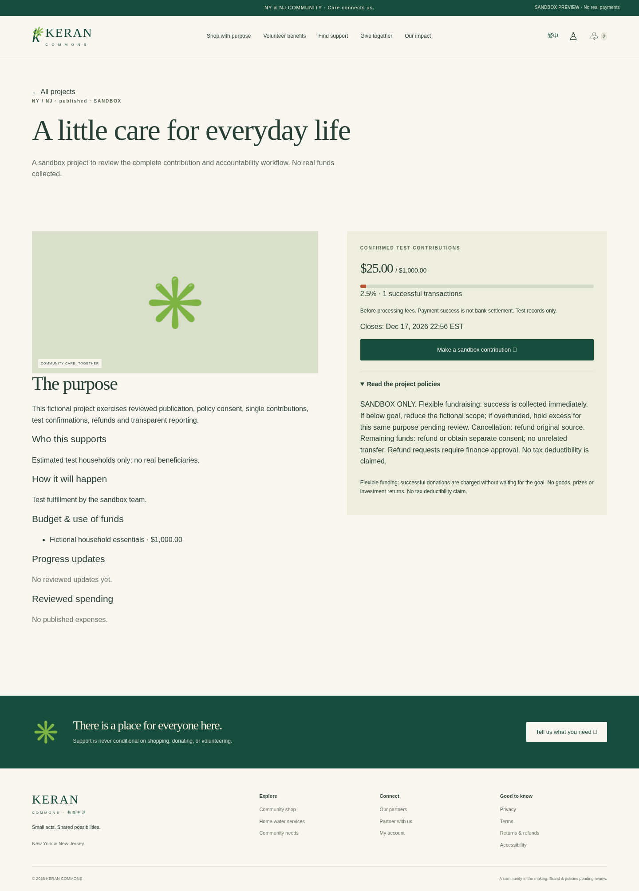
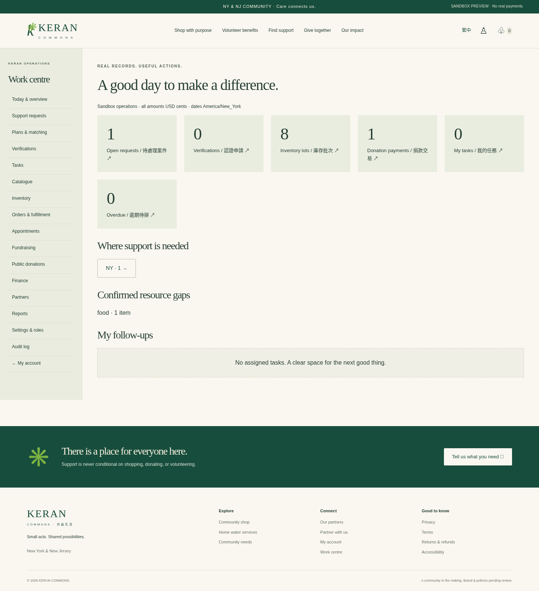

<!doctype html><html lang="zh-Hant"><meta charset="utf-8"><meta name="viewport" content="width=device-width,initial-scale=1"><title>KERAN V1.0 · 審閱截圖</title><style>body{margin:0;background:#faf7f0;color:#174d3c;font:16px/1.7 system-ui}header,main{max-width:1100px;margin:auto;padding:36px 24px}h1,h2{font-family:Georgia,serif;font-weight:400}nav{display:flex;gap:24px;flex-wrap:wrap}a{color:inherit}figure{margin:35px 0}img{max-width:100%;height:auto;border:1px solid #ddd}figcaption{padding:16px 0}#mobile img{max-width:390px}aside{background:#e6e8d8;padding:20px}</style><header><h1>KERAN 共益生活 V1.0</h1><p>實際運行網站的瀏覽器截圖 · Sandbox · 不收取真實款項</p><nav><a href="#desktop">桌面首頁</a><a href="#mobile">手機繁中</a><a href="#campaign">公益眾籌</a><a href="#work">工作中心</a></nav></header><main><aside>本頁為離線截圖索引。完整互動網站請依 README 啟動或連接環境8000埠；這些截圖不代表公開部署或正式收款。63項後端測試、16項瀏覽器流程檢查及還原證據另見驗收文件。</aside><figure id="desktop"><figcaption>桌面首頁 · 英文</figcaption></figure><figure id="mobile"><figcaption>手機首頁 · 繁體中文</figcaption></figure><figure id="campaign"><figcaption>公益眾籌 · 測試捐款與政策進度</figcaption></figure><figure id="work"><figcaption>工作中心 · 真實測試記錄的需求及待辦</figcaption></figure></main></html>
